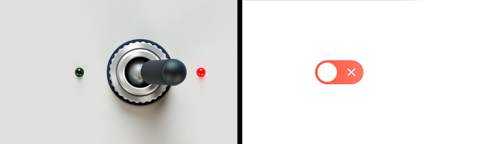

World Mimicry
Mimicking parts of the physical world in digital experiences aids the users understanding. The idea of Skeuomorphism


"You put water into a cup it becomes the cup. You put water into a bottle it becomes the bottle. You put it in a teapot, it becomes the teapot."
How can we expand on responsive design to account for non-screen based interfaces such as voice, and how do we design for all of them?
CHANGE WORDING TO MATCH ABSTRACT??
I propose a new design tool that looks to aid designers in creating the overall experience over designing for a platform
Mimicking parts of the physical world in digital experiences aids the users understanding. The idea of Skeuomorphism
No matter how current tools do collbration, i know there there needs to be a level of collbration in my tool

Sketch

Adobe XD

inVision Studio

Figma

Why is real-time collaboration so important?
“We use Google Drawings to create wireframes because it allows us all to work in the same file at the same time and to instantly see changes made.” [13]

Apple's Siri

Amazon's Alexa

Google's Assistant

Dialogflow

Sayspring

“I have an old climbing rope that could be labeled as 'broken'. It’s not suitable as a safety device while climbing anymore but I have woven it into a door mat” [4]